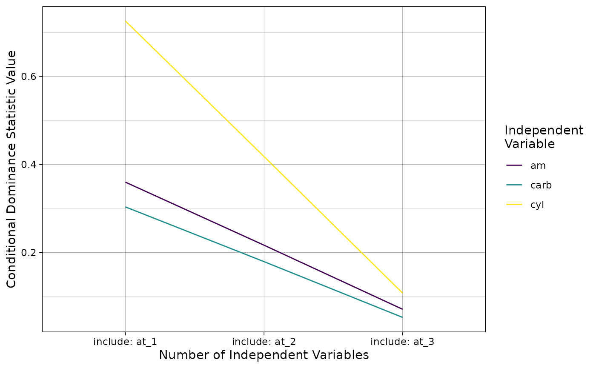

Conceptual Introduction to Dominance Analysis
Examples and
Implementation with domir
Joseph Luchman
2024-05-04
Source:vignettes/domir_basics.Rmd
domir_basics.RmdThe purpose of this vignette is to briefly discuss the conceptual underpinnings of the relative importance method implemented in the domir package and provide several extensive examples that illustrate these concepts as applied to data.
This vignette is intended to serve as a refresher for users familiar with these concepts as well as an brief introduction to them for those who are not.
By the end of this vignette, the reader should have a sense for what the key relative importance method is attempting to do as well as an understanding of how it is accomplished as applied to data.
Conceptual Introduction
The relative importance method implemented in the domir package produces results that are relatively easy to interpret but does so in a way that is computationally intensive in as implemented.
The discussion below outlines the conceptual origins of the method, what the relative importance method does, and some details about how the DA method is implemented in the domir package.
Dominance Analysis
The focus of the domir package is on dominance analysis (DA). DA is a method that resolves the indeterminacy of trying to ascribe a the results from a predictive model’s fit metric, referred to as a ‘value’ in the package, to individual predictive factors (i.e., independent variables/IVs, predictors, features), referred to as ‘names’ in the package.
A challenge for many predictive models and fit metrics are that there is no way to analytically decompose the fit statistic/metric given correlations between the predictive factors that are naturally present in the data or are introduced by the model. When there is no way to analytically separate the fit statistic to ascribe it to predictive factors, a methodological approach could be applied where values are ascribed by including the factors in the model sequentially. As each predictive factor is included, the change in the fit metric is ascribed to that predictive factor.
One issue with the sequential approach is that the sequence chosen to ascribe the fit statistic to predictive factors determines how much of the fit statistic is ascribed to the factor. When the analyst has good reason to choose a specific inclusion order, this approach produces a useful result.
Using a single inclusion order can be problematic when there is not a good reason to choose one specific inclusion order over another. When the inclusion order is effectively arbitrary, changing the order changes the values ascribed to the predictive factors in ways that have implications on inferences from the model.
A solution to this problem is to consider all possible ways of including the predictive factor. This method for resolving this issue is the approach used by Shapley value decomposition from Cooperative Game Theory (see Grömping (2007) for a discussion) which seeks to find a solution to the problem of how to subdivide payoffs to players in a cooperative game based on their relative contribution when it is not possible to separate relative contributions analytically.
DA uses the idea of comparing across inclusion orders as a
methodological, and almost experimental design-like, approach to
determining importance. DA also extends on the classic Shapley value
decomposition methodology by adding two, more difficult to achieve,
importance criteria. All three different importance criteria, known as
dominance designations, are discussed in greater detail in the context
of an example discussed below after a brief introduction to the
domir function.
Concepts in Application
The purpose of the domir package is to apply DA to predictive models. This section builds on the last by providing an example predictive model with which to illustrate the computation and interpretation of the dominance results produced by DA.
DA was developed originally using linear regression (lm)
with the explained variance \(R^2\)
metric as a fit statistic (Budescu 1993).
The examples below use this model and fit statistic as both are widely
used and understood in statistics and data science.
Consider this model using the mtcars data in the datasets package.
library(datasets)
lm_cars <-
lm(mpg ~ am + cyl + carb, data = mtcars)
summary(lm_cars)
#>
#> Call:
#> lm(formula = mpg ~ am + cyl + carb, data = mtcars)
#>
#> Residuals:
#> Min 1Q Median 3Q Max
#> -5.8853 -1.1581 0.2646 1.4885 5.4843
#>
#> Coefficients:
#> Estimate Std. Error t value Pr(>|t|)
#> (Intercept) 32.1731 2.4914 12.914 2.59e-13 ***
#> am 4.2430 1.3094 3.240 0.003074 **
#> cyl -1.7175 0.4298 -3.996 0.000424 ***
#> carb -1.1304 0.4058 -2.785 0.009481 **
#> ---
#> Signif. codes: 0 '***' 0.001 '**' 0.01 '*' 0.05 '.' 0.1 ' ' 1
#>
#> Residual standard error: 2.755 on 28 degrees of freedom
#> Multiple R-squared: 0.8113, Adjusted R-squared: 0.7911
#> F-statistic: 40.13 on 3 and 28 DF, p-value: 2.855e-10The results show that all three IVs are statistically significant at the traditional level (i.e., \(p < .05\)) and that, in total, the predictors—am, cyl, and carb—explain ~80% of the variance in mpg.
I intend to conduct a DA on this model using domir and
implement the DA as follows:
library(domir)
domir(
mpg ~ am + cyl + carb,
function(formula) {
lm_model <- lm(formula, data = mtcars)
summary(lm_model)[["r.squared"]]
}
)
#> Overall Value: 0.8113023
#>
#> General Dominance Values:
#> General Dominance Standardized Ranks
#> am 0.2156848 0.2658501 2
#> cyl 0.4173094 0.5143698 1
#> carb 0.1783081 0.2197801 3
#>
#> Conditional Dominance Values:
#> Include At: 1 Include At: 2 Include At: 3
#> am 0.3597989 0.2164938 0.07076149
#> cyl 0.7261800 0.4181185 0.10762967
#> carb 0.3035184 0.1791172 0.05228872
#>
#> Complete Dominance Proportions:
#> > am > cyl > carb
#> am > NA 0 1
#> cyl > 1 NA 1
#> carb > 0 0 NAThe domir function above prints out results in four
sections:
- fit statistic results
- general dominance statistics
- conditional dominance statistics
- complete dominance proportions
Below I “replay” and discuss each result in turn.
Fit Statistic Results
Overall Value: 0.8113023The first result domin prints is related to the overall
fit statistic value for the model. In game theory terms, this value is
the total payoff all players/IVs produced in the cooperative
game/model.
The value produced serves as the fit statistic “to be decomposed” by the DA and is limiting value for how much each IV will be able to explain. The DA will ascribe the three IVs in this model separate components of this ~\(.8113\) value related to their contributions to predicting mpg.
Other fit statistic value adjustments are reported in this section as well in particular those associated with the all subsets and constant model adjustments (to be discussed further below; sections under development) when used in the DA.
General Dominance Statistics
General Dominance Values:
General Dominance Standardized Ranks
am 0.2156848 0.2658501 2
cyl 0.4173094 0.5143698 1
carb 0.1783081 0.2197801 3The second result printed reports the general dominance statistics related to how the overall fit statistic’s value is divided up among the IVs. These also represent the Shapley value decompositions of the fit statistic showing how each player/IV is ascribed a component of the payoff/fit statistic from the game/model.
The General Dominance column of statistics can be interpreted in terms of the fit metric it decomposed. For example, am has a value of ~\(0.2157\) which means am is associated with an \(R^2\) of about twenty-two percentage points of mpg’s variance given the predictive model and other IVs.
The Standardized column of statistics expresses the general dominance statistic value as a percentage of the overall fit statistic value and thus sums to 100%. am’s contributions to the \(R^2\)’s total value is ~27% (i.e., \(\frac{.2157}{.8113} = .2659\)).
The final Ranks column is most relevant to the focal purpose of determining the relative importance of the IVs in this model as it provides a rank ordering of the IVs based on their general dominance statistics. It is here that DA moves beyond Shapley value decomposition in that DA, and this rank ordering based on general dominance statistics, allows for applying labels to the relationships between IVs in terms of their importance.
am is ranked second because it has a smaller general dominance statistic than the first ranked cyl. As such, am “is generally dominated by” cyl. By contrast, am is ranked higher than third ranked carb and thus am “generally dominates” carb. These labels are known as general dominance designations.
Points of Note: General Dominance
The general dominance statistics always sum to the value of the overall fit statistic and, because they represent parts of a whole, are widely considered the easiest of the dominance statistics to interpret (i.e., as compared to conditional and complete dominance discussed next).
The general dominance statistics, however simple to interpret, are the least stringent of the dominance statistics/designations (the reasons why are discussed later). Thus, the requirements to assign the “generally dominates” label to a relationship between two IVs are the easiest to fulfill.
Conditional Dominance Statistics
Conditional Dominance Values:
Include At: 1 Include At: 2 Include At: 3
am 0.3597989 0.2164938 0.07076149
cyl 0.7261800 0.4181185 0.10762967
carb 0.3035184 0.1791172 0.05228872The third section reported on by domin prints the
conditional dominance statistics associated with each IV. Each
IV has a separate conditional dominance statistic related to position at
which it is included in the sequence of IVs in the model.
The conditional dominance matrix can be used to designate importance in a way that is more stringent/harder to achieve than the general dominance statistics. To determine importance with the conditional dominance matrix each IV is compared to each other in a ‘row-wise’ fashion. If the value of each entry for a row/IV is greater than the value of another row/IV at the same position (i.e., comparing IVs at the same inclusion position) than an IV is said to “conditionally dominate” the other IV. The matrix above shows that am “is conditionally dominated by” cyl as its conditional dominance statistics are smaller than cyl’s at positions 1, 2, and 3. Conversely, am “conditionally dominates” carb as its conditional dominance statistics are greater than carb’s at positions 1, 2, and 3.
Points of Note: Conditional Dominance
Conditional dominance statistics provide more information about each IV than general dominance statistics as they more clearly reveal the effect that IV redundancy has on prediction for each IV. Conditional dominance statistics show the average increase in predictive usefulness associated with an IV when it is included at a specific position in the sequence of IVs. As the position gets more later in the model, the contribution any one IV can make tends to grow more limited. This limiting effect with more IVs is reflected in the trajectory of conditional dominance statistics.
The increase in complexity with conditional dominance over that of general dominance also results in a more stringent set of comparisons. Because the label “conditionally dominates” is only ascribed to a relationship that shows more contribution to the fit metric at all positions of the conditional dominance matrix, it is a more difficult criterion to achieve and is therefore a stronger designation.
Note that conditional dominance implies general dominance–but the reverse is not true. An IV can generally, but not conditionally, dominate another IV.
Complete Dominance Proportions
Complete Dominance Proportions:
> am > cyl > carb
am > NA 0 1
cyl > 1 NA 1
carb > 0 0 NAThe fourth section reported on by domir prints the
complete dominance proportions associated with each IV pair.
Each IV is compared to each other IV and has two entries in this matrix.
The IV noted in the row labels is the ‘dominating’ IV as is implied by
the greater than symbol (i.e., \(>\)) preferring it. The IV noted in the
column labels is the ‘dominated’ IV as is implied by the greater than
symbol not preferring it. The values reported are the proportion of
sub-models in which the IV in the row obtains a larger value than the IV
in the column.
The complete dominance designations are useful beyond the general and conditional dominance results as they are the most stringent sets of comparisons. Complete dominance reflects the relative performance of each IV to another IV in all the sub-models where their relative predictive performance can be compared. When a value of 1 is obtained, the IV in the row is said to “completely dominate” the IV in the column. Conversely, when a value of 0 is obtained, the IV in the row is said to be “completely dominated by” the IV in the column.
Points of Note: Complete Dominance
Complete dominance designations are the most stringent of the designations as all comparable sub-models for an IV must be larger than its comparison IV for the “conditionally dominates” label to be ascribed to their relationship. The sorts of sub-models that qualify as ‘comparable’ is discussed later.
Also note that complete dominance implies both conditional and general dominance but, again, not the reverse. An IV can conditionally or generally, but not completely, dominate another IV.
Dominance Statistics and Designations: Key Computational Details
The DA methodology currently implemented in domir is a relatively assumption-free and model agnostic but computationally expensive methodology that follows from the way Shapley value decomposition was originally formulated.
The sections below begin by providing an analogy for how to think about the computation of DA results, outline exactly how each dominance statistic and designation is determined, as well as extend the example above by applying each computation in the context of the example.
Computational Implementation: All Possible Orders
DA requires evaluating the contribution IVs make to prediction given all possible orders in which they are included in the prediction model. As was noted above, this is an experimental design-like approach where all possible combinations of the IVs included or excluded are estimated as sub-models. When there are \(p\) IVs in the model there will be \(2^p\) sub-models estimated. The experimental design-like approach of the method makes it widely applicable across predictive models and fit statistic values but is computationally expensive as each additional IV added to the model results in a geometric increase in the number of required sub-models.
DA Results: The Full-Factorial Design
The DA results related to the lm model with three IVs
discussed above is composed of 8 sub-models and their \(R^2\) values. The domir
function, if supplied a predictive modeling function that can record
each sub-model’s results, can be adapted to capture each sub-model’s
\(R^2\) value along with the IVs that
comprise it.
The code below constructs a wrapper function to export results from
each sub-model to an external data frame. The code to produce these
results is complex and each line is commented to note its purpose. This
wrapper function then replaces lm in the call to
domir so that, as the DA is executed, all the sub-models’
data are captured for the illustration to come.
lm_capture <-
function(formula, data, ...) { # wrapper program that accepts formula, data, and ellipsis arguments
count <<- count + 1 # increment counter in enclosing environment
lm_obj <- lm(formula, data = data, ...) # estimate 'lm' model and save object
DA_results[count, "formula"] <<-
deparse(formula) # record string version of formula passed in 'DA_results' in enclosing environment
DA_results[count, "R^2"] <<-
summary(lm_obj)[["r.squared"]] # record R^2 in 'DA_results' in enclosing environment
summary(lm_obj)[["r.squared"]] # return R^2
}
count <- 0 # initialize the count indicating the row in which the results will fill-in
DA_results <- # container data frame in which to record results
data.frame(formula = rep("", times = 2^3-1),
`R^2` = rep(NA, times = 2^3-1),
check.names = FALSE)
lm_da <- domir(mpg ~ am + cyl + carb, # implement the DA with the wrapper
lm_capture,
data = mtcars)
DA_results
#> formula R^2
#> 1 mpg ~ am + cyl + carb 0.8113023
#> 2 mpg ~ am 0.3597989
#> 3 mpg ~ cyl 0.7261800
#> 4 mpg ~ am + cyl 0.7590135
#> 5 mpg ~ carb 0.3035184
#> 6 mpg ~ am + carb 0.7036726
#> 7 mpg ~ cyl + carb 0.7405408The printed result from DA_results shows that
domir runs 7 sub-models; each a different combination of
the IVs. Note that, by default, the sub-model where all IVs are excluded
is assumed to result in a fit statistic value of 0 and is not estimated
directly (which can be changed with the .adj argument).
The \(R^2\) values recorded in DA_results are used to compute the dominance statistics and designations reported on above.
Complete Dominance Proportions
Complete dominance proprtions between two IVs are computed by:
\[C_{X_vX_z} =\, \frac{\Sigma^{2^{p-2}}_{j=1}{ \{\begin{matrix} if\, F_{X_v\; \cup\;S_j}\, > F_{X_z\; \cup\;S_j}\, \,then\, 1\, \\ if\, F_{X_v\; \cup\;S_j}\, \le F_{X_z\; \cup\;S_j}\,then\, \,0\end{matrix} }}{2^{p-2}}\]
Where \(X_v\) and \(X_z\) are two IVs, \(S_j\) is a distinct set of the other IVs in the model not including \(X_v\) and \(X_z\) which can include the null set (\(\emptyset\)) with no other IVs, and \(F\) is a model fit statistic. This computation is then the proportion of all comparable sub-models where \(X_v\) is greater than \(X_z\).
The results from DA_results can then be used to compute the
complete dominance proportions. The comparison begins with the results
for am and cyl.
| formula | R^2 | formula | R^2 |
|---|---|---|---|
| mpg ~ am | 0.360 | mpg ~ cyl | 0.726 |
| mpg ~ am + carb | 0.704 | mpg ~ cyl + carb | 0.741 |
The rows in the table above are aligned such that comparable models are in the rows. As applied to this example, the \(S_j\) sets are \(\emptyset\) (i.e., the null set) with no other IVs and the set also including carb.
The \(R^2\) values across the comparable models show that cyl has larger \(R^2\) values than, and thus completely dominates, am.
| formula | R^2 | formula | R^2 |
|---|---|---|---|
| mpg ~ am | 0.360 | mpg ~ carb | 0.304 |
| mpg ~ am + cyl | 0.759 | mpg ~ cyl + carb | 0.741 |
Here the \(S_j\) sets are, again, \(\emptyset\) and the set also including cyl.
The \(R^2\) values across the comparable models show that am has larger \(R^2\) values than and completely dominates carb.
| formula | R^2 | formula | R^2 |
|---|---|---|---|
| mpg ~ cyl | 0.726 | mpg ~ carb | 0.304 |
| mpg ~ am + cyl | 0.759 | mpg ~ am + carb | 0.704 |
Finally, the \(S_j\) sets are the \(\emptyset\) and the set also including am.
The \(R^2\) values across the comparable models show that cyl has larger \(R^2\) values than and completely dominates carb.
Each of these three sets of comparisons are represented in the
Complete_Dominance matrix as a series of proportions. Note that
the diagonal of the matrix is NA values as it is
conceptually useless to compare the IV to itself.
lm_da$Complete_Dominance
#> >_am >_cyl >_carb
#> am_> NA 0 1
#> cyl_> 1 NA 1
#> carb_> 0 0 NAComputing Conditional Dominance
Conditional dominance statistics are computed as:
\[C^i_{X_v} = \Sigma^{\begin{bmatrix}p-1\\i-1\end{bmatrix}}_{i=1}{\frac{F_{X_v\; \cup\; S_i}\, - F_{S_i}}{\begin{bmatrix}p-1\\i-1\end{bmatrix}}}\]
Where \(S_i\) is a subset of IVs not
including \(X_v\) and \(\begin{bmatrix}p-1\\i-1\end{bmatrix}\) is
the number of distinct combinations produced choosing the number of
elements in the bottom value (\(i-1\))
given the number of elements in the top value (\(p-1\); i.e., the value produced by
choose(p-1, i-1)).
In effect, the formula above amounts to an average of the differences between each model containing \(X_v\) from the comparable model not containing it by the number of IVs in the model total. These values then reflect the effect of including the IV at a specific order in the model. As applied to the results from DA_results, am’s conditional dominance statistics are computed with the following differences:
| formula minuend | R^2 minuend | formula subtrahend | R^2 subtrahend | difference |
|---|---|---|---|---|
| mpg ~ am | 0.36 | mpg ~ 1 | 0 | 0.36 |
| formula minuend | R^2 minuend | formula subtrahend | R^2 subtrahend | difference |
|---|---|---|---|---|
| mpg ~ am + cyl | 0.759 | mpg ~ cyl | 0.726 | 0.033 |
| mpg ~ am + carb | 0.704 | mpg ~ carb | 0.304 | 0.400 |
| formula minuend | R^2 minuend | formula subtrahend | R^2 subtrahend | difference |
|---|---|---|---|---|
| mpg ~ am + cyl + carb | 0.811 | mpg ~ cyl + carb | 0.741 | 0.071 |
The rows of each table represent a difference to be recorded for the conditional dominance statistics computation. In the position one, two, and three comparison tables, the model with am is presented first (as the minuend) and the comparable model without am is presented second (as the subtrahend)—for the first IV comparison table, this model is the intercept only model that, as is noted above, is assumed to have a value of 0. The difference is presented last.
By table, the differences are averaged resulting in the 0.36 value
when first, the
r round(lm_da$Conditional_Dominance["am", "``include_at_``2"], digits = 3)
when second, and
r round(lm_da$Conditional_Dominance["am", "``include_at_``3"], digits = 3)
when third.
Next the computations for cyl are reported.
| formula minuend | R^2 minuend | formula subtrahend | R^2 subtrahend | difference |
|---|---|---|---|---|
| mpg ~ cyl | 0.726 | mpg ~ 1 | 0 | 0.726 |
| formula minuend | R^2 minuend | formula subtrahend | R^2 subtrahend | difference |
|---|---|---|---|---|
| mpg ~ am + cyl | 0.759 | mpg ~ am | 0.360 | 0.399 |
| mpg ~ cyl + carb | 0.741 | mpg ~ carb | 0.304 | 0.437 |
| formula minuend | R^2 minuend | formula subtrahend | R^2 subtrahend | difference |
|---|---|---|---|---|
| mpg ~ am + cyl + carb | 0.811 | mpg ~ am + carb | 0.704 | 0.108 |
Again, the differences are averaged resulting in the 0.726 value when first, the 0.418 when second, and 0.108 when third.
Finally, the computations for carb.
| formula minuend | R^2 minuend | formula subtrahend | R^2 subtrahend | difference |
|---|---|---|---|---|
| mpg ~ carb | 0.304 | mpg ~ 1 | 0 | 0.304 |
| formula minuend | R^2 minuend | formula subtrahend | R^2 subtrahend | difference |
|---|---|---|---|---|
| mpg ~ am + carb | 0.704 | mpg ~ am | 0.360 | 0.344 |
| mpg ~ cyl + carb | 0.741 | mpg ~ cyl | 0.726 | 0.014 |
| formula minuend | R^2 minuend | formula subtrahend | R^2 subtrahend | difference |
|---|---|---|---|---|
| mpg ~ am + cyl + carb | 0.811 | mpg ~ am + cyl | 0.759 | 0.052 |
And again, the differences are averaged resulting in the 0.304 value when first, the 0.179 when second, and 0.052 when third.
These nine values then populate the conditional dominance statistic matrix.
lm_da$Conditional_Dominance
#> include_at_1 include_at_2 include_at_3
#> am 0.3597989 0.2164938 0.07076149
#> cyl 0.7261800 0.4181185 0.10762967
#> carb 0.3035184 0.1791172 0.05228872The conditional dominance matrix’s values can then be compared by creating a series of logical designations indicating whether each IV conditionally dominates each other.
Below the comparisons begin with am and cyl
| am | cyl | comparison | |
|---|---|---|---|
| include_at_1 | 0.360 | 0.726 | FALSE |
| include_at_2 | 0.216 | 0.418 | FALSE |
| include_at_3 | 0.071 | 0.108 | FALSE |
The table above is a transpose of the conditional dominance statistic matrix with an additional comparison column indicating whether the first IV/am’s conditional dominance statistic at that inclusion position is greater than the second IV/cyl’s at that same position.
Conditional dominance is determined by all values being
TRUE or FALSE; in this case, cyl is
seen to conditionally dominate am as all values are
FALSE.
Next is the comparison between am and carb
| am | carb | comparison | |
|---|---|---|---|
| include_at_1 | 0.360 | 0.304 | TRUE |
| include_at_2 | 0.216 | 0.179 | TRUE |
| include_at_3 | 0.071 | 0.052 | TRUE |
Here am conditionally dominates carb as all values
are TRUE.
The final comparison between cyl and carb
| cyl | carb | comparison | |
|---|---|---|---|
| include_at_1 | 0.726 | 0.304 | TRUE |
| include_at_2 | 0.418 | 0.179 | TRUE |
| include_at_3 | 0.108 | 0.052 | TRUE |
cyl also conditionally dominates carb as all values
are TRUE.
Another way of looking at conditional dominance is by graphing the trajectory of each IV across all positions in the conditional dominance matrix. If an IV’s line crosses another IV’s line, then a conditional dominance relationship between those two IVs cannot be determined. A graphic depicting the trajectory of the three IVs in the focal model is depicted below.

The graph above confirms that all three IV’s lines never cross and thus have a clear set of conditional dominance designations.
As was mentioned in the Concepts in Application section, because we knew all three IVs have complete dominance designations relative to one another, they necessarily also had conditional dominance designations relative to one another.
Computing General Dominance
General dominance is computed as:
\[C_{X_v} = \Sigma^p_{i=1}{\frac{C^i_{X_v}}{p}}\]
Where, \(C^{i}_{X_x}\) are the conditional dominance statistics for \(X_v\) with \(i\) IVs. Hence, the general dominance statistics are the arithmetic average of all the conditional dominance statistics for an IV.
When applied to am’s results, the general dominance statistic value is:
| include_at_1 | include_at_2 | include_at_3 | general dominance |
|---|---|---|---|
| 0.36 | 0.216 | 0.071 | 0.216 |
Next to cyl.
| include_at_1 | include_at_2 | include_at_3 | general dominance |
|---|---|---|---|
| 0.726 | 0.418 | 0.108 | 0.417 |
And lastly carb.
| include_at_1 | include_at_2 | include_at_3 | general dominance |
|---|---|---|---|
| 0.304 | 0.179 | 0.052 | 0.178 |
Taken as a set, these values represent the general dominance statistic/Shapley value decomposition vector:
lm_da$General_Dominance
#> am cyl carb
#> 0.2156848 0.4173094 0.1783081The general dominance statistic vector can also be used in a way similar to that of the complete and conditional dominance designations by ranking each value.
| IV | general dominance | ranks |
|---|---|---|
| am | 0.216 | 2 |
| cyl | 0.417 | 1 |
| carb | 0.178 | 3 |
The rank ordering above shows that am is generally dominated by cyl, am generally dominates carb, and cyl also generally dominates carb.
Again because we knew all three IVs have complete and conditional dominance designations relative to one another, they necessarily also had general dominance designations relative to one another.
General Dominance/Shapley Values: Weighted Average of All Submodels
It is also worth pointing out a subtle feature of the general dominance statistics that tends to be more explicit discussions about the Shapley value decomposition. This feature is that each general dominance statistic is a weighted average of all \(2^p\) fit statistics.
To see how this is the case, first recall the computations related to obtaining conditional dominance statistics for the am IV. If you look at all the entries in the three tables, all 8 models are included either as a minuend or a subtrahend. The general dominance statistics are then just an average of these three conditional dominance statistics. Hence, the general dominance statistics include the value for every model.
The conditional dominance statistics for cyl and carb re-arrange these same models but otherwise use the same information to produce their general dominance statistics.
Strongest Dominance Designations
Whereas all dominance designations have been made in the example above, the strongest designation between two IVs is likely of primary interest as the strongest designation, as is noted above, implies all weaker designations.
To access the strongest dominance designations, the DA object can be
submitted to the summary function.
summary(lm_da)$Strongest_Dominance
#>
#> "am" "am" "cyl"
#> "is completely dominated by" "completely dominates" "completely dominates"
#> "cyl" "carb" "carb"The result the summary function produces in the
Strongest_Dominance element is consistent with expectation in
that all three IV interrelationships have complete dominance
designations between them.
Parting Thoughts
“Relative importance” as a concept is used in many different ways in statistics and data science. In the author’s view, a crucial, but rarely acknowledged, difference between DA and many of the relative importance statistics produced by methods other than DA, are that many other methods are probably most useful for model selection and not for model evaluation. In making a distinction between model selection and importance, I follow the work of Azen, Budescu, and Reiser (2001) who distinguish between the concept of IV criticality and IV importance.
Criticality: Model Selection
In many cases, methods that focus on relative importance are probably best used for model selection. When applied to model selection, a method would identify when an IV should be included in the model or not. The process of determining whether or not an IV should be included in the model is desribed by Azen et al. as reflecting IV Criticality.
In the view of the author, methods such as posterior inclusion probability, Akaike weights, and permutation importance are actually IV criticality, as opposed to importance, measures. These methods are criticality methods as they tend to be informative for identifying whether an IV has trivial or non-trivial conribution to prediction but is less informative for identifying the magnitude of their contribution.
Importance: Model Evaluation
Model evaluation differs from model selection in that it seeks not to determine whether IVs should be in the model, but rather compares them in terms of their impact in the model conditional on their being included. Thus, importance methods assume that a model has passed through a model selection phase and that all the predictors in the model have non-trivial effects.
The DA method implemented by the domir function is an
importance method in this sense in that it assumes that the predictive
model used is “pre-selected” or has passed through model selection
procedures and the user is confident that the IVs model and are, in
fact, reasonable to include. The results from DA and similar methods
then provide more information about relative contribution to prediction
which assists in model evaluation.